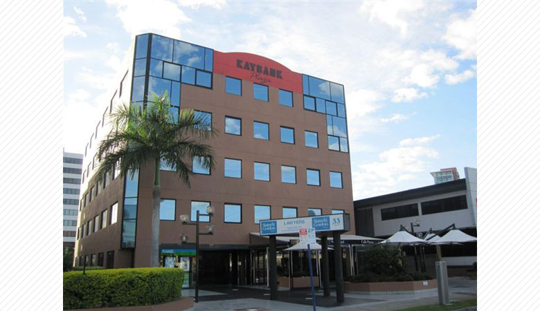
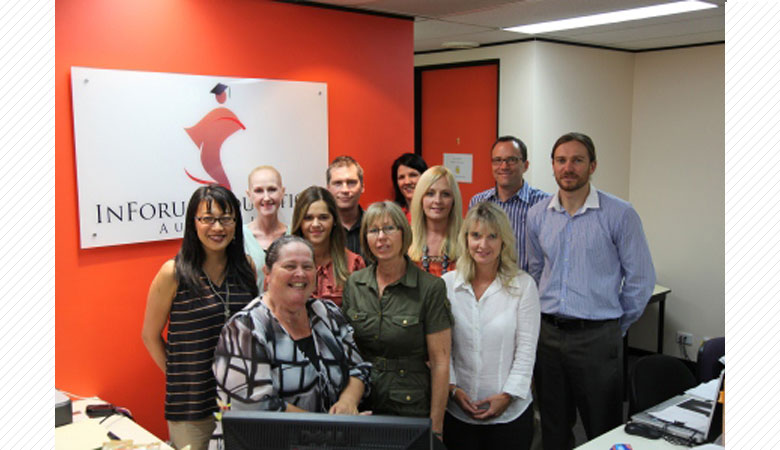
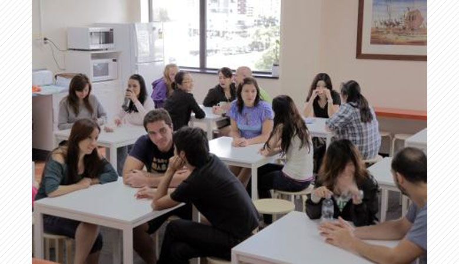
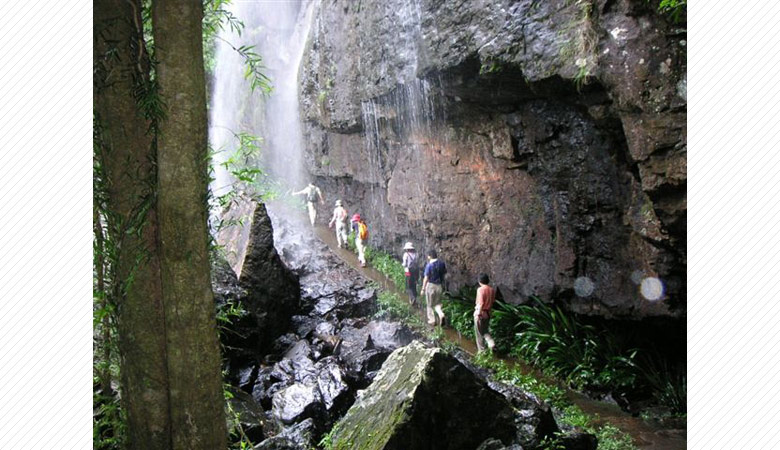
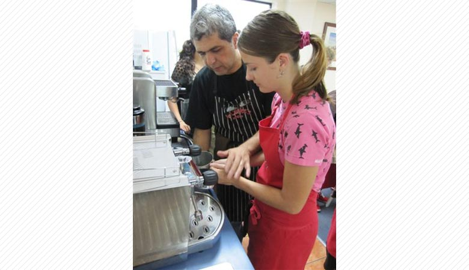
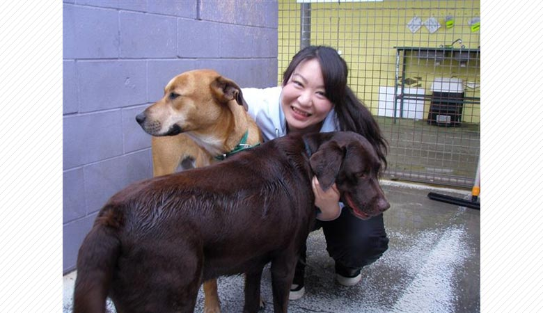
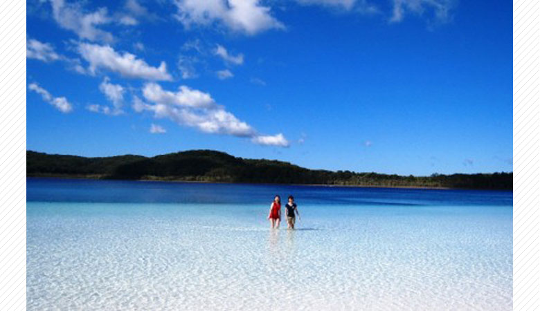

インフォーラム・エデュケーション・オーストラリア
世界中の語学学校が巨大化、チェーン校化する中、全校生徒120人以下、チェーン校無しのアットホームな質重視のブティック学校。

実際通った生徒たちのアンケートを基に受賞が決まる2010~11年日本ベストスクール賞
総合世界6位にランクインしその質の高さも実証済み。
サイモン校長のオフィスは勉強や日常生活の相談だけでなく、普通に話にに来る生徒たちでにぎわっている。
校長の生徒に対する姿勢が全てのスタッフに反映し、どのスタッフも本当に生徒思いで、フレンドリー。

初級から上級まで、Total Englishというかなり難しい英語の教科書を基本に授業を行い、
ハイレベルな英語を初級レベルから身につけられる。
マスタークラスでは、IELTSやケンブリッジ試験に合格するための生徒たちが本当の上級レベルになるために、
IELTSの試験管やケンブリッジ大学の資格者の基勉強をしている。
真面目に楽しく！やる気のある生徒にはピッタリ。
ベッド数が6つしかなく、いつも一杯人気の寮は学校と似ていて小さな家を6人でシェアする方式。
3ヶ月くらい前なら空き有！来年様子を見ながらもう一軒増やす予定もあるらしい？？？
55kmのビーチが続く亜熱帯気候ゴールドコーストのサウスポートに位置する。
サウスポートは世界の観光客が集まるサーファーズ・パラダイスからバスで5～7分、
ゴールドコースト市の教育、法律、医学の街として知られている。

エコツーリズムお仕事体験
有名ツアーガイド、Yahagi Masakiさんと世界遺産を二つ、スプリングブルック日帰 りエコツアー、
フレーザー島一泊2日のエコツアーに参加しながら、エコツーリズム について学び、Yahagiさんのアシスタントも体験

バリスタ
元コロンビアコーヒー豆審査官のマリッチオから学ぶ、本格的コーヒーの淹れ方。
ミルクだって、温度計無しで手のひらと耳で泡立てられるようになりますよ。

動物ボランティア（有料）
動物ボランティア活動の準備のためのトレーニング、2日間付き。

１７週のお申し込みで
世界遺産フレーザー島一泊二日の旅をプレゼント!